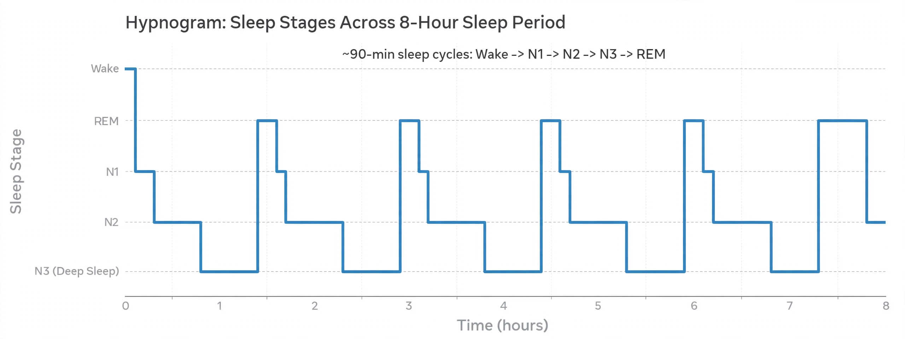

Sleep

[Image: a hypnogram chart showing the cycles of sleep stages across a night, descending into deep sleep and rising into REM]Sleep is a naturally recurring state of mind and body characterised by altered consciousness, reduced sensory activity and inhibition of voluntary muscles, present in all studied animals from mammals and birds to insects and jellyfish — strong evidence it performs essential functions. In humans it cycles through stages of non-REM sleep and REM (rapid eye movement) sleep, in which most vivid dreaming occurs, roughly every 90 minutes through the night.
Sleep is regulated by circadian rhythms (timed by the suprachiasmatic nucleus responding to light) and by homeostatic sleep pressure (adenosine accumulating during waking). Adults need roughly 7–9 hours; chronic deprivation impairs cognition, immunity, metabolism and mood, and is linked to accidents and disease.
Functions
Leading functions, not mutually exclusive: memory consolidation (replaying and stabilising the day's learning), brain metabolic housekeeping (the glymphatic system clearing waste, including amyloid, more actively in sleep), energy conservation and emotional regulation. Sleep spindles and slow waves correlate with specific kinds of learning.
Disorders
Insomnia, sleep apnoea (repeated airway collapse — a cardiovascular risk), narcolepsy (failure of wake-state stability, from loss of orexin neurons), restless legs and parasomnias such as sleepwalking. Sleep medicine uses polysomnography to stage sleep from brain waves, eye movements and muscle tone.